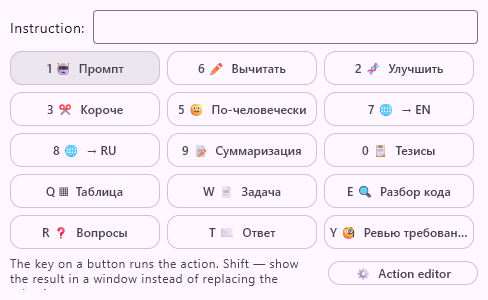
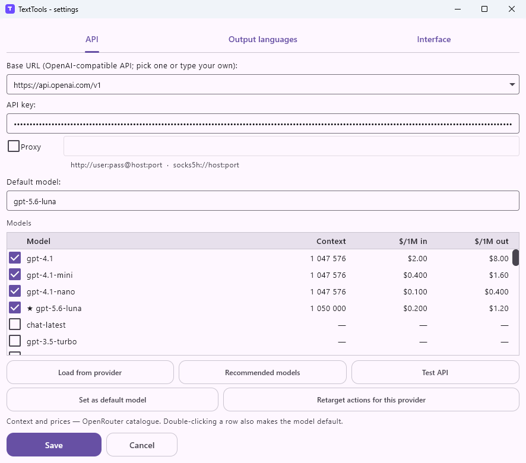
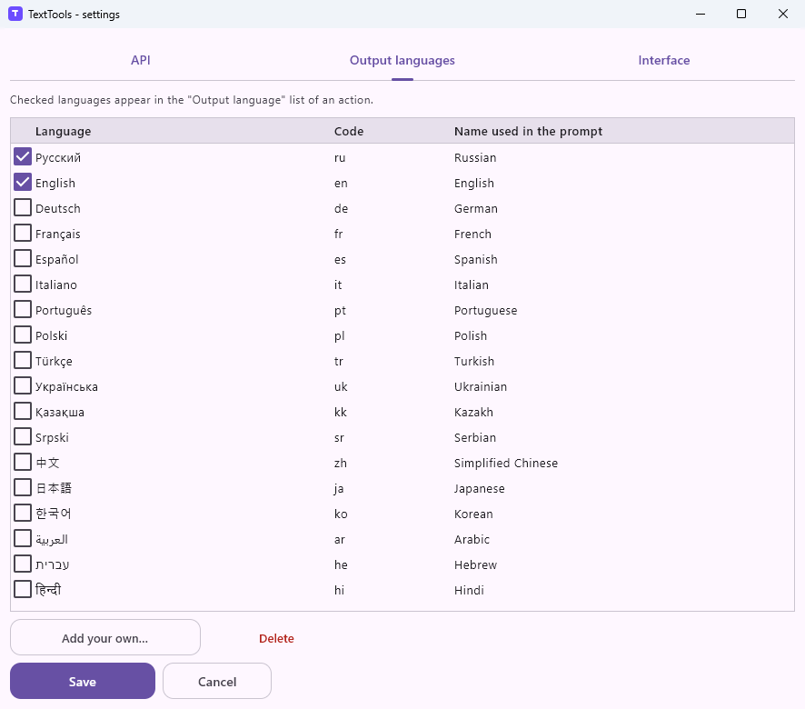
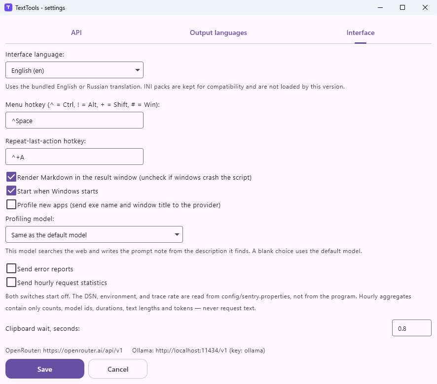
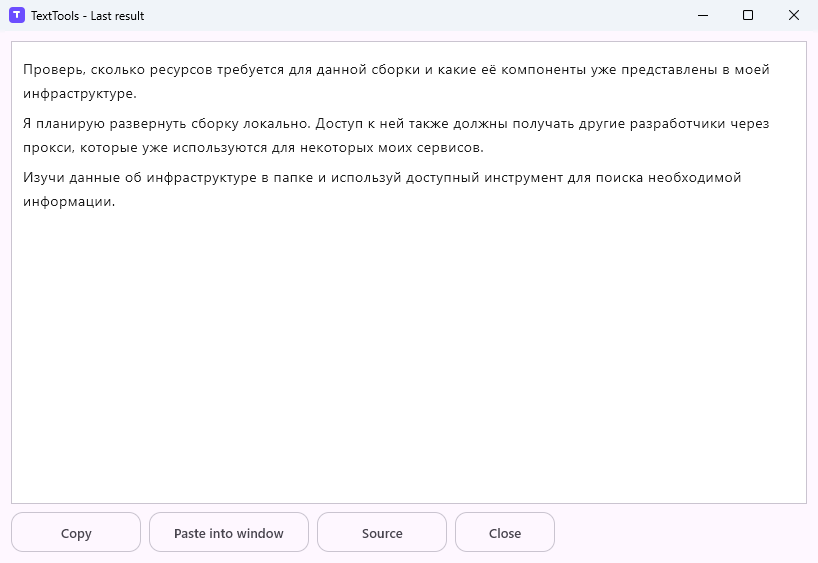
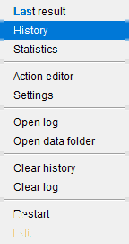

Один хоткей в любом окне
Браузер, почта, IDE, Excel — без плагинов и без копирования в чат. Открыл меню, выбрал действие или дописал свою инструкцию.
Windows · Kotlin
Выдели текст в любом приложении, нажми хоткей — появится сетка действий. Вычитка, переписывание, краткое изложение, таблица, разбор кода и остальное. Результат либо встанет вместо выделения, либо откроется в отдельном окне.

Приложение на Kotlin. Ключ лежит в хранилище системы; к модели уходит только текст конкретного действия.
Браузер, почта, IDE, Excel — без плагинов и без копирования в чат. Открыл меню, выбрал действие или дописал свою инструкцию.
OpenRouter, OpenAI, прокси Anthropic, локальный Ollama — всё, что отвечает на /v1/chat/completions. Можно задать модель по умолчанию и отдельно на действие.
Кнопки, промпты и подсказки «откуда текст» (IDE, почта, таблица…) настраиваются из трея. Сломал — сбросил к заводским.
Текущий интерфейс. Снимки сделаны с установленной версии 1.0: сетка действий, три вкладки настроек, окно результата и меню трея.





Пятнадцать действий в сетке и свободная инструкция. Ниже — часть заводского набора.
proofreadПоправить форму, смысл не трогатьrewriteСделать яснее, без водыsummaryСжать до сутиtableСобрать Markdown-таблицуspecНабросать спеку под разработкуcodeРазобрать кусок кодаreplyЧерновик ответаreqreviewПройтись по требованиямУстановка
Установщик Windows — в релизе v1.1.1. Пакет Debian и образ для Mac для этого тега не пересобирались. Захват выделения и вставка в другое окно есть только в сборке Windows.
Полная инструкцияhttps://github.com/BelyaevAD/TextTools/releases/download/v1.1.1/TextTools-1.1.1.msi
# deb: в Ubuntu, ./gradlew clean :app:packageDeb
# DMG: на Mac, sh packaging/macos/package-dmg.shКлюч и прокси лежат в хранилище системы, не в файле настроек и не в SQLite. Профилирование приложений и отчёты об ошибках выключены, пока их не включить. История на диске хранит тексты — в git её лучше не класть.
Ctrl+Alt+Space: Ctrl+Space часто уже занят IME и другими хуками.http://localhost:11434/v1, ключ ollama.lang/*.ini этой версией не загружаются.